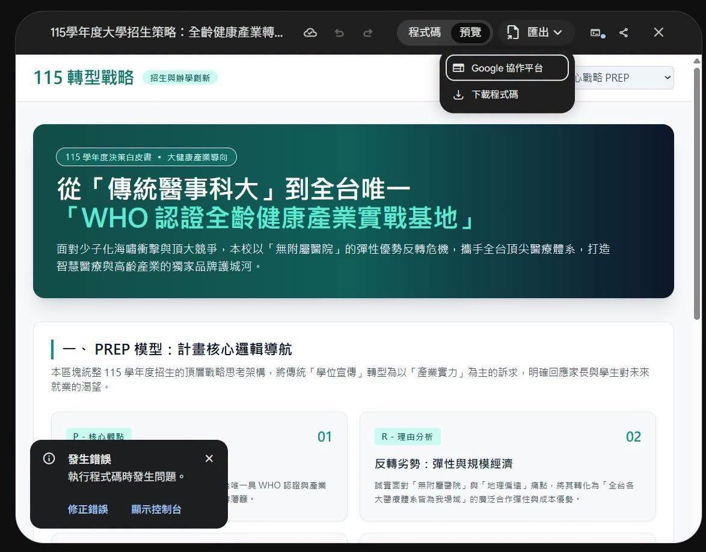

Gemini HTML 匯出 Google 協作平台？Facebook 截圖、發布流程與自訂網域的實際查核

貼文主張
Facebook 社團「Generative AI 技術交流中心」的貼文稱，Gemini 可先生成 HTML，再透過「匯出 → Google 協作平台」直接變成網頁，因而「不用再去使用其它方式佈署」；並稱可輸入想要的網址。
這個說法把「把內容送進 Google 協作平台」與「網站可公開、可用自訂網址、可穩定維護」混成同一件事。它們相關，但不是同一個步驟。
截圖能證明什麼？
本次保存的截圖中可清楚讀到：
- 上方有「程式碼」、「預覽」與「匯出」介面。
- 點開「匯出」後有兩個選項：**Google 協作平台**、**下載程式碼**。
- 左下角同時顯示：**「發生錯誤／執行程式碼時發生問題。」**
因此，合理而有限的結論是：截圖中的 Gemini 類網頁編輯／預覽工作區，曾呈現將內容送往 Google 協作平台的選項。它**不能**單獨證明：
- 所有 Gemini 帳戶、地區、語言、方案與 Google Workspace 網域均有此功能；
- 該次匯出有成功完成；
- 匯出的 HTML 能逐字保留、支援 JavaScript、第三方資源或任意前端框架；
- 不需任何發布、存取權限或網址設定；
- 可以用任意「想要的網址」。
Google 協作平台不是「免部署」，而是代管式發布
Google 官方的[如何使用 Google 協作平台](https://support.google.com/sites/answer/6372878?hl=zh-Hant)將流程分成兩段：
- **步驟 1：將內容新增到協作平台**；
- **步驟 2：發布及共用協作平台**。
所以，即使 Gemini 的功能把初稿匯入或建立在 Google Sites 中，仍應檢查預覽、版面、連結、存取權限，並手動發布及設定分享範圍。這省略的是自行架設主機、CI/CD 或靜態站點服務的部分工作，不是免除發布責任。
「輸入想要的網址」需釐清兩種網址
| 類型 | 代表意義 | 實務條件 |
|---|---|---|
| Google Sites 發布路徑 | Google 提供的 sites.google.com 網址路徑 | 要避免名稱衝突，且仍須完成發布與權限設定。 |
| 自訂網域 | 例如 `www.example.com` | 必須是網站擁有者；需驗證網域所有權、設定 DNS；公司／學校帳戶可能需管理員協助。 |
Google 的[自訂網域說明](https://support.google.com/sites/answer/9068867?hl=zh-Hant)指出：一個網站最多可連結五個自訂網域；變更最久可能需要 **48 小時**在網際網路生效。這正是「輸入網址，先搶先贏」沒有交代的限制。
建議的安全驗證流程
- 在 Gemini／Canvas 內先完成 HTML，並確認內容不含個資、API key、內網連結或不應公開的檔案。
- 若「匯出 → Google 協作平台」可見，先匯出到**測試網站**，不要直接使用正式站。
- 開啟 Google Sites 預覽，測試行動版、外部連結、圖片、嵌入內容與無痕視窗下的可見性。
- 明確設定誰可檢視：公開、指定帳戶、網域內使用者或受邀者；避免把草稿誤設為公開。
- 若要自訂網域，先確認網域所有權、DNS 管理權與 Workspace 管理員流程，再依官方文件驗證與等待傳播。
- 保留 HTML 原始檔與版本控制。Google Sites 適合快速代管頁面；需要客製 JavaScript、可攜性、完整 SEO／分析或可重現部署時，仍建議保留 GitHub Pages、Cloudflare Pages、Vercel 等正式發布流程。
對欒帥目前知識庫的意義
AI 學習雷達目前使用 GitHub Pages 部署，具備版本追蹤、可檢視變更與既有公開 URL。Google Sites 可作為快速示範、臨時內部頁面或不需要複雜前端功能的低摩擦選項，但不應在未驗證匯出品質、權限與資料外流風險前取代正式知識庫部署。
來源與限制
- Facebook 原貼文：https://www.facebook.com/groups/gaitech/posts/1817018819482325/
- Google 官方： [如何使用 Google 協作平台](https://support.google.com/sites/answer/6372878?hl=zh-Hant)
- Google 官方： [將自訂網域用於你的網站](https://support.google.com/sites/answer/9068867?hl=zh-Hant)
Facebook 貼文受登入牆限制。本篇根據公開 metadata、可下載的貼文截圖與 Google 官方協作平台說明整理；沒有登入 Gemini 實作匯出，也沒有把截圖功能視為所有帳戶當下必定可用的官方承諾。